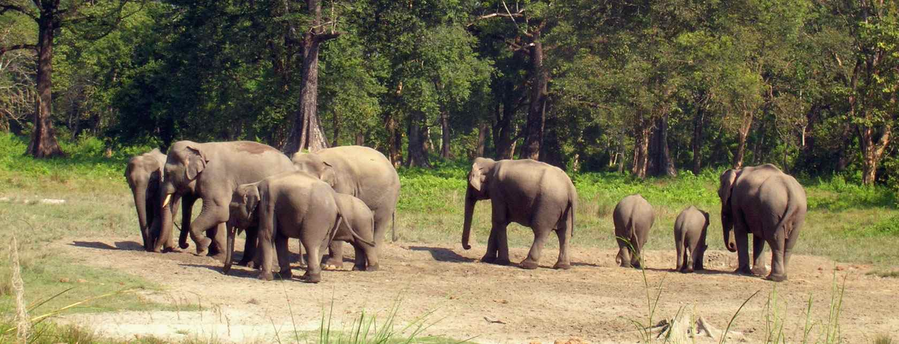

ALIPURDUAR

The major portion of the Dooars region is now in the new district of Alipurduar. The beauty of the region lies not only in its tea gardens but also in the dense jungles. A number of rare endangered species of animals like tiger, rhinoceros and elephant make their habitat in the forests of the Dooars. Other animals include different types of deer, bison, birds and reptiles.
Located in the north bank of the Kaljani River, Alipurduar is the gateway to Bhutan and the north-eastern states of India. Pumtse is the highest peak of Chhota Sinchula area in Alipurduar. The peak offers beautiful views of the impermeable forest covers of the Buxa hills and Bhutan valley.

HOW TO REACH ?
Nearest Airport:Darjeeling
Nearest Railway Station: Darjeeling
Nearest Bus Stand: Darjeeling